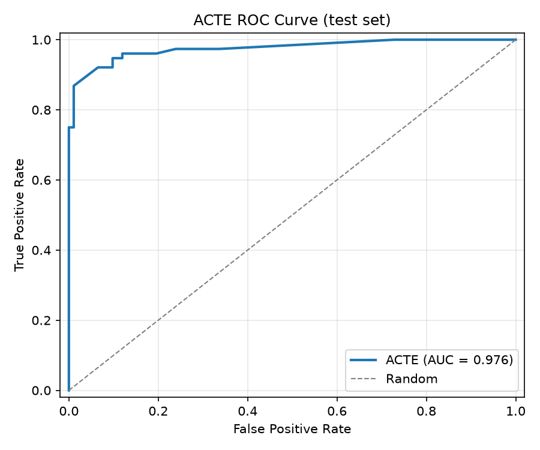
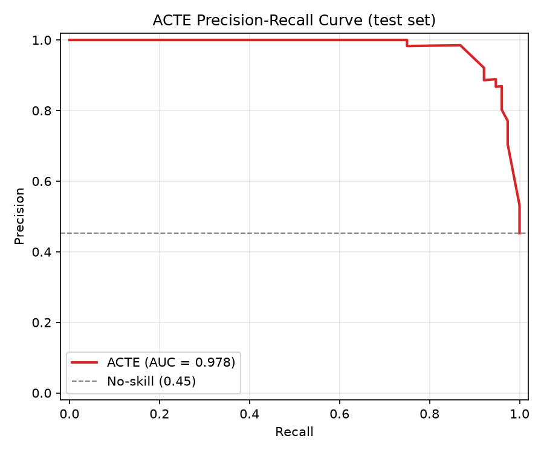
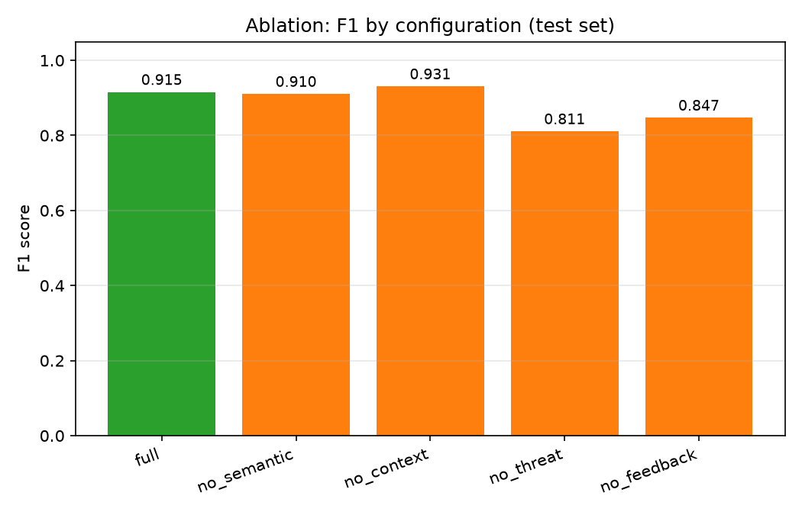
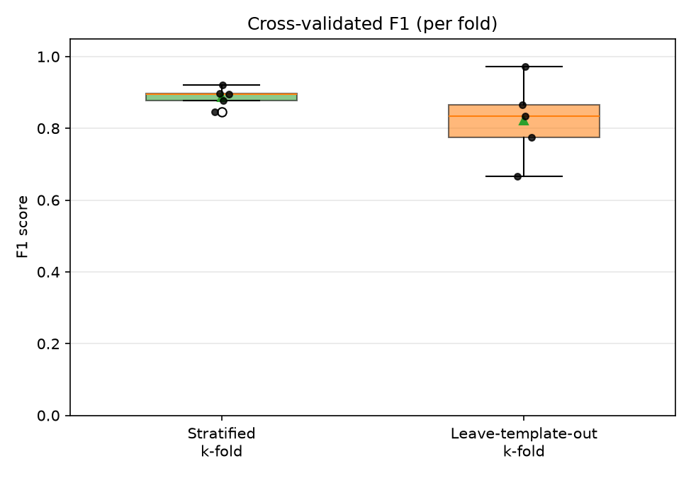
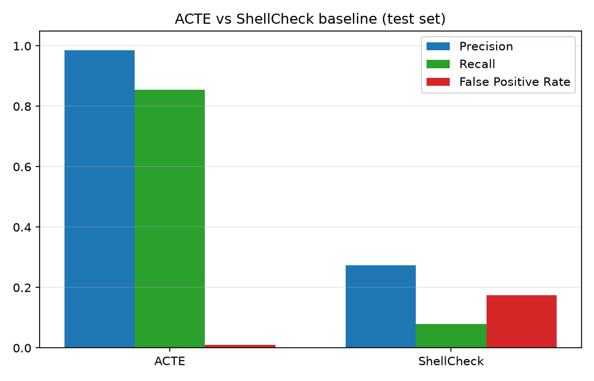
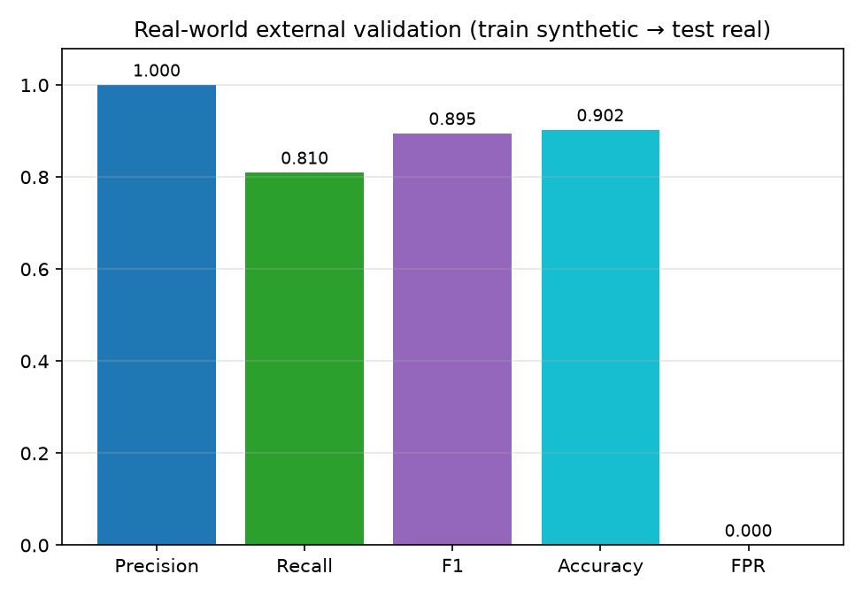
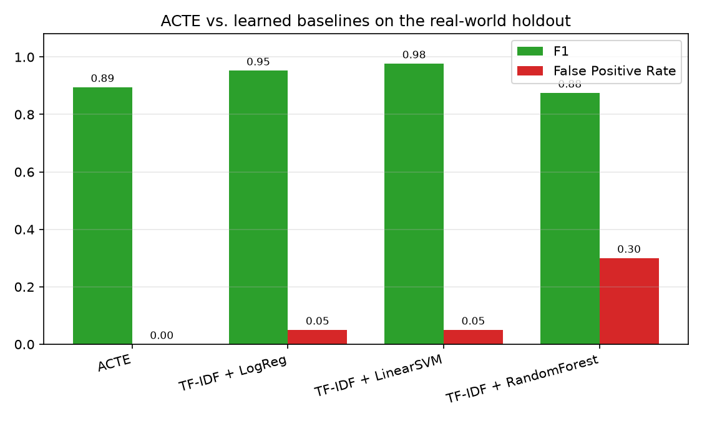

Abstract—Large language models now write shell scripts that reach production with little review, and a script that lints cleanly can still wipe a disk, open a reverse shell, or ship credentials off the host. We present ACTE (Adaptive Context-aware Trust Execution), a pre-execution trust gate that scores a script instead of merely checking its style. ACTE parses the script, extracts five execution-context features (privilege, network egress, filesystem scope, irreversibility, and obfuscation), matches an auditable signature base, and combines the resulting thirteen signals in a logistic risk model, \(R(s)=\sigma(b+\sum_i w_i x_i)\), whose weights adapt online from labelled outcomes. The score maps to one of four trust levels—TRUSTED, MONITOR, RESTRICT, DENY—and ACTE compiles each level into concrete enforcement artefacts: a seccomp profile, an Open Policy Agent rule, and namespace/cgroup limits. We study the prototype on a reproducible corpus of 420 labelled scripts and, to probe transfer, on an independent holdout of 41 real, publicly documented scripts the model never sees in training. On the held-out split ACTE reaches F1 = 0.915 (precision 0.985, recall 0.855, ROC-AUC 0.976) at roughly half a millisecond per script. Five-fold cross-validation places F1 at 0.887 ± 0.025; a leave-template-out protocol that forbids any template from spanning the train and test folds still yields 0.823 ± 0.101, which weakens the usual objection that a synthetic corpus only rewards template memorisation. Trained only on synthetic data and frozen, ACTE holds precision at 1.000 with zero false positives on the real holdout (ROC-AUC 0.990), though recall falls to 0.810 on evasive payloads its signature base does not yet cover. Against strong learned baselines—TF-IDF logistic regression, a linear SVM, and a random forest—ACTE is competitive rather than dominant on raw F1; what distinguishes it is the lowest false-positive rate, a fully attributable thirteen-feature decision, sub-millisecond online adaptation, and the enforcement policy it emits, none of which a bag-of-tokens classifier offers. That distinction turns decisive under adaptive evasion: a two-line behaviour-preserving camouflage that leaves the malicious commands intact drops the lexical baseline's recall from 0.97 to 0.32 while barely touching ACTE (0.86 to 0.84). We are candid about the scope: the training corpus is synthetic and author-generated, and the enforcement layer is a faithful sketch rather than a live kernel filter.
The proliferation of large language models capable of generating executable code has fundamentally altered the software supply-chain landscape. Tools such as GitHub Copilot, ChatGPT, and their successors are now routinely employed to produce shell scripts for infrastructure management, deployment automation, and one-off administrative tasks. While this accelerates development velocity, it introduces a category of risk that conventional static analysis tools were not designed to address: the AI-generated shell script as an attack surface.
Shell scripts are privileged, imperative artifacts. A single malicious or misconfigured script can exfiltrate credentials, establish persistence, destroy filesystems, or exfiltrate data over covert channels. The key threat model concern is not that LLMs are inherently malicious, but rather that (i) prompt injection and adversarial prompting can induce dangerous outputs, (ii) model hallucination can produce syntactically valid yet semantically harmful constructs, and (iii) the opacity of LLM generation means that standard code-review heuristics fail to capture the full behavioral envelope of the generated code.
Existing defenses are inadequate for this threat model. Static linters such as ShellCheck [1] detect syntactic errors and style violations but are agnostic to intent and behavioral context. Mandatory access-control frameworks such as SELinux [2] and AppArmor [3] operate at the process level and require pre-authored policy that cannot adapt to unseen code at runtime. Behavioral monitors such as Falco [4] and eBPF-based auditing systems [5] observe execution but cannot preempt it. None of these approaches integrates a continuous risk score derived from the script's content, execution context, and historical feedback into a unified adaptive trust decision made before the script runs.
We present the Adaptive Context-Aware Trust Execution (ACTE) framework to address this gap. ACTE's central contribution is a formal logistic risk function \(R(s)\) that aggregates features from three orthogonal evidence dimensions—semantic structure, execution context, and threat-intelligence signatures—into a continuous risk score in \((0,1)\), which is inverted to a trust score \(T(s)=1-R(s)\) and mapped to a discrete enforcement level. The weight vector is updated online by SGD whenever labelled feedback arrives, so the decision boundary can drift toward a given deployment's script distribution without a batch retrain.
The paper contributes four things. We formalise the problem of pre-execution trust scoring for AI-generated shell scripts, with an explicit threat model (Section II), and give a compact logistic risk model with an online update rule and a documented monotonicity property (Sections III–IV). We describe an eight-module architecture that turns a trust score into concrete enforcement artefacts, and a Python prototype (Sections V–VI). We evaluate that prototype under a deliberately demanding protocol—cross-validation, a leave-template-out split, bootstrap intervals, learned baselines, and an independent real-world holdout—and report the results, favourable and unfavourable alike (Sections VII–IX). And we are equally explicit about what the work does not establish (Section X): the training data is synthetic and author-generated, enforcement is simulated, and there is no adaptive-attacker evaluation. We see the value of the paper as a reproducible framework and an honest baseline, not as a finished detector.
Let \(\mathcal{S}\) denote the universe of POSIX-compatible shell scripts. Each script \(s \in \mathcal{S}\) is a finite sequence of characters that may be submitted to a shell interpreter for execution on a host system with resources \(\mathcal{R}\) (filesystems, network interfaces, device nodes, process table). We are interested in the subset \(\mathcal{S}_{\mathrm{AI}} \subseteq \mathcal{S}\) of scripts produced, in whole or in part, by generative language models, though the framework is applicable to any shell script regardless of provenance.
We consider an adversary \(\mathcal{A}\) who controls the prompt submitted to an LLM-based code-generation service and whose goal is to cause the generated script to perform one or more of the following: (i) unauthorized data exfiltration, (ii) persistence establishment, (iii) privilege escalation, (iv) irreversible data destruction, or (v) lateral movement. We assume the adversary can craft obfuscated scripts (e.g., base64-encoded payloads, eval-based indirection, character-substitution ciphers) to evade pattern-based defenses. We do not model adversaries with physical hardware access or kernel-level root kits; our threat boundary ends at the system-call interface.
Let \(\mathcal{C}\) be the set of distinct commands (executables) that may appear in scripts in \(\mathcal{S}\). Let \(\mathcal{X}: \mathcal{S} \to [0,1]^d\) be a feature-extraction function mapping any script to a \(d\)-dimensional real-valued feature vector. Define a risk function \(R: \mathcal{S} \to (0,1)\) and a trust function \(T: \mathcal{S} \to (0,1)\) such that \(T(s) = 1 - R(s)\) for all \(s\). The trust level of a script is a discrete label \(\ell(s) \in \{\mathrm{TRUSTED}, \mathrm{MONITOR}, \mathrm{RESTRICT}, \mathrm{DENY}\}\) obtained by thresholding \(R(s)\).
We structure the experimental evaluation around four research questions (RQs):
RQ1 (Detection Accuracy): What classification performance does ACTE achieve on held-out labeled scripts; how stable is that performance under cross-validation; and how does each component contribute?
RQ2 (Computational Cost): Is ACTE's per-script analysis latency compatible with inline deployment on interactive or CI/CD pipelines?
RQ3 (False-Positive Reduction): By how much does ACTE reduce the false-positive rate relative to a ShellCheck v0.9.0 baseline, and is the difference statistically significant?
RQ4 (Generalization to Real Scripts): Does a model trained solely on the synthetic corpus generalize to independent, real, publicly-documented scripts it has never seen?
ACTE's distinguishing characteristics relative to existing work are as follows. First, it operates before execution, producing a trust decision based on static content analysis rather than observable runtime behavior—thus it can preempt dangerous scripts rather than merely detect them post-hoc. Second, unlike rule-only systems (SELinux, AppArmor, seccomp), ACTE derives its risk signal from the script's content and synthesizes a corresponding policy automatically; human policy authoring is not required per script. Third, unlike pure static linters, ACTE incorporates a probabilistic risk model with online learning, so its decision boundary adapts to evolving script distributions. Fourth, ACTE provides a continuous risk score rather than a binary flag, enabling graded enforcement proportionate to assessed risk.
The four trust levels map to concrete enforcement postures: TRUSTED scripts execute without restriction; MONITOR scripts execute with full audit logging; RESTRICT scripts execute in a sandboxed namespace with network egress blocked, read-only root filesystem, and capped CPU/memory/PID resources; DENY scripts are blocked entirely with no execution permitted.
The online feedback loop closes the adaptation loop: when a MONITOR-level script is later confirmed safe or dangerous by an operator, a single SGD step updates the weight vector in sub-millisecond time, moving the decision boundary for future similar scripts without requiring batch retraining.
Let \(\mathcal{C}\) be the command set extracted by the SemanticParser, and let \(\mathcal{G} = \{\mathrm{semantic}, \mathrm{context}, \mathrm{threat}\}\) be the three feature groups. The full feature vector is \(\mathbf{x}(s) \in [0,1]^{13}\), with 5 semantic features, 5 context features, and 3 threat-intelligence aggregates (see Section V for definitions).
The logit (linear combination) is
$$z(s) = b + \sum_{i=1}^{13} w_i \, x_i(s),$$where \(b\) is a scalar bias and \(\mathbf{w} \in \mathbb{R}^{13}\) is the weight vector. The risk score is the logistic (sigmoid) transformation:
$$R(s) = \sigma(z(s)) = \frac{1}{1 + e^{-z(s)}} \in (0,1).$$Trust is the complementary quantity:
$$T(s) = 1 - R(s) \in (0,1).$$The discrete trust level is determined by
$$\ell(s) = \begin{cases} \mathrm{TRUSTED} & R(s) < 0.25, \\ \mathrm{MONITOR} & 0.25 \le R(s) < 0.50, \\ \mathrm{RESTRICT} & 0.50 \le R(s) < 0.80, \\ \mathrm{DENY} & R(s) \ge 0.80. \end{cases}$$Binary detection for evaluation purposes uses a tunable decision threshold \(\tau\) (default 0.50): a script is predicted dangerous if \(R(s) \ge \tau\).
Because \(\sigma\) is strictly increasing, \(R(s)\) is monotone in \(z(s)\): adding a positive-weighted feature never decreases risk, and adding a benign-weighted (negative) feature never increases risk. Formally, if \(\mathbf{x}'(s) \ge \mathbf{x}(s)\) component-wise (with at least one strict inequality and \(w_i > 0\) for the differing components), then \(R(s') > R(s)\). This property provides an auditable safety invariant useful for formal analysis and operator trust.
When a labeled example \((s, y) \in \mathcal{S} \times \{0,1\}\) is received (with \(y=1\) indicating dangerous), FeedbackLearning applies a single SGD step on the binary cross-entropy loss \(\mathcal{L}(p,y) = -[y\ln p + (1-y)\ln(1-p)]\), where \(p = R(s)\):
Input: features x, label y ∈ {0,1}, learning rate η, L2 penalty λ
z ← b + Σ_i w_i · x_i
p ← σ(z)
error ← p − y // gradient of BCE wrt logit
for each feature i:
grad ← error · x_i + λ · w_i // gradient + L2 regularization
w_i ← w_i − η · grad
b ← b − η · error
Output: updated (w, b)
The L2 penalty \(\lambda \|\mathbf{w}\|^2\) prevents weight drift from auditable hand-set priors. Across 40 training epochs on 252 labeled scripts, the weight vector shifted by \(\|\Delta\mathbf{w}\| = 6.08\) and loss declined from 0.345 to 0.288, confirming non-trivial adaptation.
ACTE comprises eight cooperating modules arranged as a linear analysis pipeline followed by an enforcement layer: a raw script flows through the SemanticParser, ContextExtractor, and ThreatIntel into the TrustEvaluationEngine, whose assessment feeds the PolicyGenerator and RuntimeMonitor, with FeedbackLearning updating the engine's weights out of band.
The SemanticParser converts a raw script string into a structured ParsedScript bundle. It attempts to parse each line with bashlex, a Python port of the GNU Bash parser, and falls back to a robust shlex/regex tokenizer when bashlex raises (as it frequently does on obfuscated or adversarial input). It extracts: command names, flags, file paths, URLs, device nodes, pipe count, pipe-to-shell detection, command-substitution density, redirection count, background-job count, and heredoc count.
The ContextExtractor derives five normalized execution-context dimensions from the ParsedScript: (1) privilege_required—presence of privilege-escalation commands (sudo, su, setcap) or sudoers manipulation; (2) network_egress—network-capable commands, URLs, pipe-to-shell patterns, or /dev/tcp redirections; (3) filesystem_scope—access to sensitive roots (/etc, /boot, /dev) or recursive wildcard operations; (4) irreversibility—destructive commands (rm -rf, dd, mkfs, shred) or no-preserve-root patterns; (5) obfuscation—base64 decoding, eval, hex-escape sequences, or high command-substitution density.
ThreatIntel loads a JSON knowledge base of regex-pattern signatures, each assigned a signed weight indicating threat (>0) or benign (<0) signal strength. It produces a list of SignatureHit objects, from which three aggregate features are derived: total weight norm, maximum single-category weight norm, and count of distinct threat categories (each normalized to [0,1]).
The TrustEvaluationEngine assembles the 13-dimensional feature vector from the outputs of the three preceding modules, evaluates the logistic risk function \(R(s)\), and returns a TrustAssessment containing the risk score, trust score, trust level, logit, per-feature contributions, and matched signatures.
FeedbackLearning exposes an update_one method (single SGD step) and a train method (multi-epoch batch training over labeled pairs). It additionally provides a tune_threshold method that selects the decision threshold \(\tau\) maximizing F1 (or minimizing FPR subject to a recall constraint) on a validation set.
PolicyGenerator translates a TrustAssessment into an ExecutionPolicy consisting of a seccomp profile sketch (Docker JSON format), an OPA Rego policy snippet, and a namespace/cgroup constraint bundle. Each trust level yields a distinct syscall allow-list, network posture, resource quotas, and capability drop set.
RuntimeMonitor provides a simulation of seccomp-bpf enforcement against a stream of observed syscall names. Given a policy, it builds allow/audit/block/kill decision tables and can be queried per-syscall or in batch mode. In the current prototype, enforcement is simulated (no kernel-level seccomp filter is installed); the monitor is included to demonstrate the enforcement logic in a testable form.
The ACTEPipeline orchestrates all seven preceding modules into a single analyze(script) call that returns a fully populated ACTEResult object, including the latency measured via time.perf_counter().
The ACTE prototype is implemented in Python 3.11. The SemanticParser uses the bashlex library for AST-level parsing and the standard shlex module for the fallback tokenizer. Regex-based extraction of URLs, device nodes, and file paths is handled by compiled patterns applied to the raw script string, providing resilience against obfuscated syntax that defeats AST parsers.
The TrustEvaluationEngine's logistic model is implemented entirely in pure Python using the standard math module, with a numerically stable sigmoid that avoids overflow for large positive or negative logits. Default weights were hand-set to produce a reasonable cold-start model and are subsequently adapted by FeedbackLearning.
The FeedbackLearning module implements SGD with L2 regularization. Epoch shuffling is performed with a deterministic linear-congruential generator (LCG) seeded from the training invocation, ensuring reproducible training order independent of any global random state. The threshold tuner performs a sweep over all candidate thresholds present in the scored validation set.
Policy generation produces seccomp JSON in the Docker seccomp profile format and Open Policy Agent Rego snippets. The Rego output specifies allow, audit, network_egress_allowed, and allow_new_privileges decisions for each trust level. Namespace constraints specify Linux namespaces to isolate (PID, mount, UTS, IPC, and optionally NET), cgroup CPU quota, memory limit, and PID limit. These artifacts are emitted as data structures; in a production deployment they would be passed to a container runtime or an eBPF enforcement agent.
The complete codebase is released publicly (see the Reproducibility section) and includes the dataset generator, the real-world holdout builder, the experiment runner, the cross-validation and statistics modules, the figure-generation scripts, and the full test suite. The run command python -m experiments.run_all reproduces all reported numbers end-to-end.
We constructed a dataset of 420 labeled shell scripts spanning five categories: ai_generated (scripts plausibly attributable to LLM generation), malicious (known-bad payloads), obfuscated (scripts with encoding/eval indirection), safe_everyday (routine user scripts with no dangerous behavior), and sysadmin (legitimate administrative scripts, some with moderate privilege use). The dataset is synthetic-but-reproducible: all scripts were generated by a deterministic dataset generator seeded at 1337, ensuring any researcher can reconstruct the exact dataset and reproduce reported numbers. Hard negatives (safe scripts resembling dangerous patterns) and hard positives (dangerous scripts with minimal syntactic markers) are included to stress-test the classifier. The dataset is split 60/40 train/test (252/168 scripts), yielding 114 positive training examples and 76 positive test examples.
H1 (RQ1): ACTE achieves F1 > 0.85 on the held-out test set, and the cross-validated mean F1 remains above 0.80. H2 (RQ2): Mean per-script latency is below 2 ms. H3 (RQ3): ACTE's false-positive rate is at least 80% lower than ShellCheck v0.9.0, and the difference is statistically significant (\(\alpha=0.05\)). H4 (RQ4): On the real-world holdout, ACTE retains F1 > 0.85 with FPR ≤ 0.10.
For RQ1, ACTE is trained for 40 epochs on the training split. The decision threshold is chosen on the training split alone, by maximising F1; for the full model this procedure selects \(\tau=0.50\), and we use that operating point on the held-out test split. (When the model is retrained on a different corpus the tuned threshold moves accordingly; for the full-corpus model of RQ4 it is \(\tau=0.32\).) Classification metrics—precision, recall, F1, MCC, accuracy, ROC-AUC, PR-AUC, FPR, FNR—are then computed on the held-out test split. The ablation study removes one component at a time (SemanticParser, ContextExtractor, ThreatIntel, FeedbackLearning) by zeroing the corresponding feature group and re-running the identical training and evaluation protocol. We caution that the four defined trust levels use fixed risk thresholds (DENY at \(R\ge0.80\)), which are a separate concern from the binary decision threshold \(\tau\) used for detection metrics; a script at RESTRICT (\(R\ge0.50\)) counts as "flagged" under \(\tau=0.50\).
For RQ2, each of the 420 scripts is analyzed three times and the minimum latency is recorded (to minimize scheduling jitter). Throughput is computed as the reciprocal of the mean latency.
For RQ3, ShellCheck v0.9.0 is applied to each test script; a script is predicted dangerous when any finding at severity error or warning is produced. We stress at the outset what this comparison can and cannot show. ShellCheck is a correctness and portability linter, not a security classifier, so beating it does not establish state-of-the-art detection; it quantifies the gap that motivates the work—that the tool teams already run is blind to the behaviours we care about. Because both detectors see the same items, we test the difference with the exact binomial form of McNemar's test on the discordant pairs [17], the appropriate paired test for two classifiers on one set. The more demanding comparison, against learned classifiers, is RQ5.
For RQ5, we train three off-the-shelf supervised baselines on TF-IDF features of the raw script text (word 1–2 grams and character 3–5 grams): logistic regression, a linear SVM, and a random forest, all from scikit-learn [16]. Each is evaluated on the same test split as ACTE and, after retraining on the full synthetic corpus, on the real-world holdout, so the transfer comparison is like-for-like.
To move past a single split we cross-validate the full model two ways using scikit-learn's stratified splitters [16]. Stratified five-fold preserves the label ratio in each fold and estimates generalisation to fresh samples from the same distribution. Leave-template-out five-fold (a stratified group split keyed on the generating template, of which there are 70) keeps every template wholly inside one fold, so the model is always scored on template structures absent from its training folds; this is the harder test and the one that speaks to the template-memorisation concern. Because tuning an F1-optimal threshold on the small per-fold partitions is itself a large source of variance, both cross-validation schemes fix \(\tau=0.50\) and report the resulting spread as mean ± standard deviation over folds, together with the pooled out-of-fold confusion matrix. For the single held-out split we additionally report percentile bootstrap 95% confidence intervals from 2,000 class-stratified resamples [18].
For RQ4 (generalisation to real scripts), ACTE is trained on the entire synthetic corpus—feedback learning and threshold tuning on synthetic data only—then frozen and evaluated once on an independent holdout of 41 hand-written scripts drawn from publicly documented idioms. To keep the holdout genuinely external we verified, with a sequence-similarity check, that no holdout script exceeds 0.85 similarity to any training script; the closest pair sits at 0.83.
For RQ4, we build an independent holdout of 41 hand-authored real scripts (21 dangerous, 20 safe) drawn from publicly documented idioms—standard sysadmin/devops tasks on the safe side and canonical, publicly catalogued attack techniques (reverse shells, the bash fork bomb, device-wipe dd/mkfs, SSH authorized_keys backdoors, cron persistence, obfuscated payloads) on the dangerous side. None is produced by the synthetic generator and none is byte-identical to any training script. ACTE is trained on the entire synthetic corpus (feedback learning and threshold tuning on synthetic data only), then frozen and evaluated once on the real holdout, yielding a genuine train-synthetic / test-real generalization measurement.
Table I reports the full metrics for ACTE and each ablation configuration. The full model achieves F1 = 0.915, Precision = 0.985, Recall = 0.855, MCC = 0.861, and ROC-AUC = 0.976 on the 168-script test set (TN=91, FP=1, FN=11, TP=65). Hypothesis H1 is confirmed. The ROC and precision-recall curves (Figures 1 and 2) sit well above their no-skill baselines, indicating the model ranks scripts by risk effectively; we return to what this does and does not imply in Section IX.
| Configuration | Prec. | Rec. | F1 | MCC | FPR | ROC-AUC |
|---|---|---|---|---|---|---|
| Full ACTE | 0.985 | 0.855 | 0.915 | 0.861 | 0.011 | 0.976 |
| No SemanticParser | 0.957 | 0.868 | 0.910 | 0.846 | 0.033 | 0.967 |
| No ContextExtractor | 0.985 | 0.882 | 0.931 | 0.883 | 0.011 | 0.969 |
| No ThreatIntel | 0.833 | 0.789 | 0.811 | 0.663 | 0.130 | 0.896 |
| No FeedbackLearning | 0.766 | 0.947 | 0.847 | 0.710 | 0.239 | 0.952 |



To check that the single-split headline is not an artifact of one partition, Table I-B reports bootstrap 95% confidence intervals for the held-out metrics alongside the two cross-validation schemes (both at the fixed default \(\tau=0.50\), which is why their F1 sits slightly below the threshold-tuned single-split figure). Stratified five-fold gives F1 = 0.887 ± 0.025, consistent with the single-split result and tight across folds. Leave-template-out five-fold gives F1 = 0.823 ± 0.101: lower and more variable, as one would expect when the model must judge template structures it never trained on, but well clear of chance. We deliberately surface the accompanying false-positive rate, which the headline 0.011 does not represent: at the untuned operating point the stratified FPR is 0.10 ± 0.04 and the leave-template-out FPR is 0.11 ± 0.19. In other words, the very low headline FPR is a property of the tuned threshold, and under leave-template-out generalisation the false-positive advantage narrows considerably. The honest reading is that leave-template-out cross-validation weakens—without fully dispelling—the concern that a synthetic corpus rewards template memorisation. Figure 5 shows the per-fold F1 distributions.
| Metric / Scheme | Precision | Recall | F1 | FPR |
|---|---|---|---|---|
| Held-out point | 0.985 | 0.855 | 0.915 | 0.011 |
| Bootstrap 95% CI | [.953, 1.000] | [.776, .934] | [.861, .959] | [.000, .033] |
| Stratified 5-fold | 0.884±.036 | 0.895±.055 | 0.887±.025 | 0.100±.040 |
| Leave-template-out | 0.903±.142 | 0.800±.175 | 0.823±.101 | 0.113±.186 |

The ablation results confirm that ThreatIntel is the single most discriminative component: its removal reduces F1 by 0.105 and increases FPR from 0.011 to 0.130. FeedbackLearning, while contributing a smaller F1 change (\(\Delta\)F1=−0.068), is the primary mechanism controlling false positives: without it, FPR rises dramatically from 0.011 to 0.239 as the unlearned model defaults to over-predicting dangerous. Removing ContextExtractor, counter-intuitively, yields a marginally higher F1 (0.931) due to threshold shift; this suggests that in the present dataset, context features add discriminative precision at the cost of some recall, a trade-off resolvable via threshold tuning. SemanticParser removal has the smallest individual effect (\(\Delta\)F1=−0.005) because the remaining components partially compensate through overlapping signal.
Mean per-script analysis latency is 0.52 ms (median 0.48 ms, p95 0.96 ms, p99 1.26 ms), measured over 420 scripts with three repetitions each and the minimum kept per script to suppress scheduler jitter; throughput is roughly 1,900 scripts/second. Latency is the one figure that varies run to run, since it is a wall-clock measurement. Hypothesis H2 holds comfortably: even the 95th-percentile stays under a millisecond, well inside the budget for an inline CI/CD or shell-hook check. These numbers cover analysis only; installing a live seccomp filter would add a one-time per-execution cost that the prototype does not incur.
Table II compares ACTE against ShellCheck v0.9.0. The point of this comparison is not to claim a scalp—ShellCheck is a style and correctness linter, and using it as a danger classifier is a category error—but to make concrete why teams cannot lean on the tool they already run. Under the charitable error+warning mapping (mean 0.27 findings/script) ShellCheck flags 17.4% of safe scripts while catching under 8% of dangerous ones (FPR 0.174, recall 0.079, F1 0.122, MCC −0.140); the negative MCC means its "dangerous" verdicts are, if anything, slightly anti-correlated with actual danger. The stricter error-only mapping never fires on a safe script but catches a single true positive (recall 0.013). ACTE's FPR of 0.011 is far lower, but the honest way to state the result is qualitative: a linter and a trust classifier are answering different questions, and RQ5 provides the comparison that actually tests ACTE's modelling choices.
| System | Prec. | Recall | F1 | MCC | FPR |
|---|---|---|---|---|---|
| ACTE (full) | 0.985 | 0.855 | 0.915 | 0.861 | 0.011 |
| ShellCheck (error+warn) | 0.273 | 0.079 | 0.122 | −0.140 | 0.174 |
| ShellCheck (error only) | 1.000 | 0.013 | 0.026 | 0.085 | 0.000 |

The gap is not a sampling accident: the exact McNemar test on the paired predictions finds ACTE correct on 75 items where ShellCheck errs against one the other way, \(p\approx2\times10^{-21}\). We read this as confirming that a linter is the wrong instrument for the job, not as evidence that ACTE is a strong detector in absolute terms—that claim rests on RQ5.
Table III reports the external-validation result. Trained only on the synthetic corpus, frozen, and run once on the 41-script holdout, ACTE reaches F1 = 0.895 (precision 1.000, recall 0.810, ROC-AUC 0.990, FPR 0.000; F1 bootstrap 95% CI [0.79, 0.97], necessarily wide at this sample size). The precision is the part we find most encouraging: all 20 safe scripts are cleared, including the traps we planted—a recursive chmod on a web root, a dd copy between two regular files, a privileged apt install—while the trusted-vendor curl | sh installer is flagged, consistent with our conservative stance that piping remote code into a shell is the hazard regardless of the vendor. The four misses are the honest part. All are evasive techniques with no matching signature and only moderate context scores: a socat reverse shell, a blkdiscard device wipe, an rsync --delete that empties the filesystem without ever naming rm, and a ROT13-obfuscated download-and-run. The high ROC-AUC (0.990) alongside the lower recall tells us the ranking is sound but the fixed threshold is conservative on unfamiliar payloads—precisely the case for the signature-induction and behavioural-feature work we flag as future work, and a reminder that a finite signature base is a coverage floor, not a ceiling.
| Metric | Precision | Recall | F1 | ROC-AUC | FPR |
|---|---|---|---|---|---|
| ACTE (frozen) | 1.000 | 0.810 | 0.895 | 0.990 | 0.000 |

The comparison that actually stresses ACTE's design is against classifiers trained on the same labels. We fit TF-IDF features (word 1–2 grams and character 3–5 grams) to logistic regression, a linear SVM, and a random forest. Table IV shows the outcome, and it is not the outcome a paper usually reports about its own method: on the synthetic test split the linear text classifiers reach F1 = 0.974, above ACTE's 0.915, and on the real holdout the linear SVM reaches F1 = 0.977 to ACTE's 0.895. We state this plainly because it sharpens what ACTE is actually for. A thirteen-feature logistic model does not win a raw-accuracy contest against a few thousand lexical features, and it was never going to.
What ACTE does hold is the properties that matter for a gate. Its false-positive rate is the lowest of the field on the real holdout (0.000 against 0.050 for the linear models and 0.300 for the random forest), and on a gate the cost of a false alarm is what operators actually pay. Its decision is attributable to thirteen named features with signed contributions, whereas the logistic baseline's verdict rests on opaque weights over tokens such as the bare string rf and on distributional accidents of the corpus (the synthetic .test hostnames earn their own weight); such a model is both hard to audit and easy to evade by renaming. Its weights update online from a single labelled example in under a millisecond, where a fitted TF-IDF vocabulary is frozen at training time. And it emits an enforcement policy, which a bare label cannot. The reasonable conclusion is not that ACTE beats these baselines but that it occupies a different, arguably more deployable point in the design space: interpretable, adaptive, policy-producing, and calibrated toward precision.
| Detector | F1 (test) | FPR (test) | F1 (real) | FPR (real) |
|---|---|---|---|---|
| ACTE (full) | 0.915 | 0.011 | 0.895 | 0.000 |
| TF-IDF + LogReg | 0.974 | 0.022 | 0.952 | 0.050 |
| TF-IDF + LinearSVM | 0.974 | 0.022 | 0.977 | 0.050 |
| TF-IDF + RandomForest | 0.968 | 0.054 | 0.875 | 0.300 |

RQ5 leaves an uncomfortable question: if a TF-IDF classifier matches ACTE on F1, why prefer ACTE? The answer is what happens under an adversary. We take the dangerous test scripts and apply two behaviour-preserving edits, leaving the malicious commands untouched. Benign camouflage prepends a shebang, set -euo pipefail, and a few reassuring comments — a direct probe of the monotonicity property, since those tokens carry negative weight in our model. Lexical disguise renames attacker hostnames and variables. Table V reports recall before and after.
| Detector | Original | Benign camouflage | Lexical disguise | Both |
|---|---|---|---|---|
| ACTE (full) | 0.855 | 0.842 | 0.855 | 0.842 |
| TF-IDF + LogReg | 0.974 | 0.316 | 0.974 | 0.303 |
The result reverses RQ5's raw-F1 verdict. Benign camouflage costs ACTE 0.013 recall; it costs the lexical baseline 0.658 — a two-line, behaviour-preserving edit that any operator would wave through collapses the bag-of-tokens model from 0.974 to 0.316, while ACTE barely moves. The reason is exactly the structure the two models do not share: ACTE's signature and context weights for the intact malicious commands dominate the small negative weights of the benign-signal tokens, whereas the TF-IDF model had learned that shebangs, set -e, and comments mark safe scripts. Renaming hostnames moves neither detector, because both key on command structure, not specific strings. This is also the empirical answer to the monotonicity objection of Section IV-D: the property is a theoretical evasion lever, but the benign-signal weights are too small to float a genuinely dangerous script under the threshold. The evasions that do succeed against ACTE are the ones from RQ4 — novel techniques with no signature — not cosmetic disguises.
Point estimates on a single split cannot, by themselves, separate a real effect from a lucky partition, so we quantify uncertainty three ways. Percentile bootstrap 95% intervals from 2,000 class-stratified resamples of the 168-sample test set give F1 [0.861, 0.959], precision [0.953, 1.000], recall [0.776, 0.934], and ROC-AUC [0.951, 0.994] (Table I-B). Because resampling holds class proportions fixed, these intervals understate uncertainty from class-balance sampling and, on the small holdouts, are wide; we present them as bounds, not as tight guarantees. Five-fold cross-validation puts F1 at 0.887 ± 0.025 (stratified) and 0.823 ± 0.101 (leave-template-out), so the result reproduces under resampling and largely survives the removal of template overlap. The exact McNemar test rejects equal error rates against ShellCheck at \(p\approx2\times10^{-21}\); as discussed in Section VIII-D we treat this as evidence about linters, not about competing detectors.
The Matthew's Correlation Coefficient (MCC) of 0.861 is an informative summary statistic for imbalanced binary classification, as it takes into account all four entries of the confusion matrix and is not inflated by class imbalance. An MCC approaching 1.0 indicates near-perfect classification; our value of 0.861 is consistent with a high-performing but not perfect detector, with the primary source of imperfection being false negatives in the malicious category (recall=0.750).
The ROC and PR curves (Figures 1 and 2) show that the ranking quality is threshold-independent: ROC-AUC 0.976 and PR-AUC 0.978 mean the model orders scripts well irrespective of where the cut is placed. We are careful not to call the model "calibrated": ranking quality (AUC) is a separate property from calibration (whether a risk of 0.7 corresponds to a 70% empirical danger rate), and we have not measured the latter. A reliability analysis, and threshold selection that accounts for it, is left to future work.
Finally, we note a limitation of the ablation deltas: they are point differences between configurations trained under one protocol on one split, not paired significance tests, and the confidence intervals of neighbouring configurations overlap. They indicate the direction and rough magnitude of each component's contribution, not a certified ranking.
The most serious threat to this study is that one author wrote the threat signatures, the feature extractors, the synthetic-corpus generator, and the real-world holdout. When the designer of a detector also authors the data it is judged on, the evaluation risks measuring self-consistency rather than detection ability, and the ablation makes the dependence explicit: removing ThreatIntel is the single largest hit to F1, which is to say a good deal of the performance rests on author-written regexes matching payloads drawn from an author-known vocabulary of techniques. Leave-template-out cross-validation and the independence-checked real holdout push against this concern but cannot dissolve it. We therefore read the absolute numbers as evidence about the method under controlled conditions, and we do not present them as an estimate of field detection rate. The decisive test—third-party scripts (real assistant outputs, public malware-shell corpora) labelled by independent annotators with reported inter-annotator agreement—is exactly the study we cannot run from author-generated data, and it is the first item of future work for a reason.
The training corpus is synthetic: 420 scripts from 70 templates, so the effective number of independent items is closer to 70 than to 420, and category is largely confounded with label (the malicious and obfuscated categories are entirely dangerous, safe_everyday entirely safe, and the sysadmin category contains a single dangerous script, whose per-category "recall = 1.0" is therefore anecdotal). The honest per-category picture is that recall on the genuinely hard malicious class is 0.75, and the abstract's 0.855 aggregate is buoyed by easier categories. We mitigate the memorisation concern with leave-template-out cross-validation (F1 = 0.823) and the transfer concern with the RQ4 holdout (F1 = 0.895, precision = 1.000), the latter verified to share no script above 0.83 similarity with training. But 41 real scripts is a small, author-curated sample; its confidence intervals are wide and it is not a substitute for field data. None of the absolute numbers should be assumed to transfer unchanged to production.
The enforcement layer is a sketch. The PolicyGenerator and RuntimeMonitor emit seccomp profiles, Rego rules, and cgroup limits as inspectable data and simulate their effect, but no kernel-level filter is installed, so the prototype does not by itself prevent a single system call. The latency figures cover analysis only and exclude the one-time cost of installing a live filter. Readers should take the title's "runtime security" as the problem the framework targets, not a capability the current artefact demonstrates end to end; wiring the generated artefacts into a live container runtime is future-work item 2.
The threat model (Section II-B) posits an adversary who crafts evasions, and RQ6 (Section VIII-G) is our first, limited step at testing that: two behaviour-preserving transformations. The encouraging finding is that benign camouflage—the most direct exploit of the monotonicity property—barely dents ACTE (0.013 recall) while collapsing the lexical baseline, because the signature weights of the intact malicious commands dominate the small negative benign-signal weights. The sobering finding is that the monotonicity lever is still real in principle: an attacker who removes or hides the positively-weighted features themselves—splitting a pipeline across lines, staging a download before executing it, substituting an uninstrumented tool—can provably lower the score, and the four RQ4 misses are exactly such novel, signature-absent techniques. Our evaluation covers only cosmetic and single-step edits; it is not a search for worst-case adversarial inputs, and it does not model an attacker who adapts to the published weights. A thorough adaptive-attacker study, and defences such as non-monotone or randomised components and continual signature induction, remain open problems we do not claim to have solved.
The code, data generators, experiment runners, and figure scripts are in the public repository. One command, python -m experiments.run_all, regenerates the synthetic corpus (seed 1337) and the real-world holdout, trains the model, runs all five research questions—the two cross-validation schemes, bootstrap intervals, the McNemar test, the learned baselines, and the external validation—and writes results.json, results.md, and every figure. Corpus membership is now content-hashed with SHA-256 rather than the salted built-in hash(), so the dataset is byte-identical across runs and interpreters; the grouped folds use scikit-learn's StratifiedGroupKFold. A suite of over 140 tests (python -m pytest tests/) guards every component and encodes the invariants a reviewer would want checked: that leave-template-out folds share no template, that fold class balance is not degenerate, and that no holdout script exceeds 0.85 sequence similarity to any training script.
Provenance is documented in data/PROVENANCE.md for the synthetic corpus and in data/real_world/build.py for the holdout, the latter recording each script's public source and its labelling rationale. Python 3.11 on Linux was used for the reported run; dependencies are pinned in requirements.txt. Every classification metric is reproducible given the same seed; only wall-clock latency varies by design.
ShellCheck [1] is the most widely deployed static analyzer for shell scripts, detecting syntactic bugs, quoting errors, and portability issues via a combination of grammar-based parsing and heuristic rules. Its scope is correctness and style rather than security, and it operates entirely statically without a concept of trust or adaptive scoring. Our evaluation quantifies the practical limitation of applying ShellCheck as a security filter: the error+warning mapping achieves recall of only 7.9% at FPR of 17.4% on our test set, confirming its unsuitability for the threat model considered here.
SELinux [2] and AppArmor [3] are kernel-enforced mandatory access-control frameworks. SELinux implements a type-enforcement model in which every process and object is labeled and access decisions follow an explicit policy database. AppArmor uses pathname-based profiles. Both are highly effective at constraining known applications, but they require human-authored per-process policies; they cannot automatically generate an appropriate policy from the content of an unseen script at submission time. ACTE's PolicyGenerator addresses this gap by synthesizing enforcement artifacts directly from the risk assessment.
Falco [4] is a runtime threat-detection tool that monitors kernel-level system calls and container events against a rule set, alerting on anomalous behavior. Linux auditd [5] provides a similar audit log at the syscall level. eBPF-based monitors extend this capability with programmable, low-overhead kernel probes [6]. These systems are inherently reactive: they detect dangerous behavior after it begins. ACTE is proactive: it assigns a trust level before execution and generates an enforcement policy that constrains what the script is permitted to do, rather than logging what it did.
seccomp-bpf [7] provides a kernel-enforced syscall filter that can deny or kill a process on forbidden system calls. Linux namespaces [8] and cgroups [9] isolate process view of the system and constrain resource consumption respectively. Open Policy Agent (OPA) and its Rego policy language [10] provide a general-purpose, declarative policy engine used in cloud-native stacks. ACTE builds on this ecosystem: its PolicyGenerator emits seccomp profiles and Rego policies, and its RuntimeMonitor simulates seccomp-bpf enforcement. The novelty lies in the automated derivation of these policies from a content-based trust score rather than requiring manual authorship.
A growing body of work studies the security properties of LLM-generated code. Pearce et al. [11] found that GitHub Copilot introduces security vulnerabilities in approximately 40% of generated code samples across a range of CWE categories. Khoury et al. [12] evaluated ChatGPT-generated code for security vulnerabilities, finding frequent occurrences of SQL injection, path traversal, and command injection. Tony et al. [13] introduced LLMSecEval, a benchmark for evaluating LLMs on security-sensitive code generation tasks. These works focus on code quality and vulnerability introduction at generation time; ACTE complements them by providing a runtime gate that intercepts potentially dangerous scripts regardless of how they were generated.
The zero-trust security paradigm [14] posits that no entity should be inherently trusted, and access decisions should be continuously evaluated based on context and evidence. ACTE instantiates a zero-trust approach specifically for code execution: every submitted script receives a trust evaluation from first principles, and execution permissions are granted proportionate to the assessed trust level rather than based on the submitter's identity or the script's syntactic validity. This aligns with emerging work on continuous authorization for automated systems [15].
ACTE scores a shell script before it runs, combining semantic parsing, execution-context features, and an auditable signature base in a thirteen-feature logistic model that adapts online and compiles its verdict into an enforcement policy. On our corpus it reaches F1 = 0.915 at roughly half a millisecond per script; the result holds under five-fold cross-validation (0.887 ± 0.025) and largely survives a leave-template-out split (0.823 ± 0.101); and, trained only on synthetic data, the frozen model clears every safe script in an independent real-world holdout while missing four evasive payloads (precision 1.000, recall 0.810). Set against learned text classifiers, ACTE does not win on raw F1—a candid finding—but it offers the lowest false-positive rate, an attributable decision, online adaptation, and a generated policy, and under a simple behaviour-preserving camouflage its recall holds where the lexical baseline's collapses, which together make it a more deployable point in the design space. We are equally clear about the boundaries: the training corpus is synthetic and author-generated, enforcement is simulated, and the model has not faced an adaptive attacker. We offer the work as a reproducible framework and an honest baseline for a problem that is only going to grow.
This paper is the first in a planned research program. Immediate future work includes: (1) scaling the external validation of Section VIII-E into a large-scale field study that harvests AI-generated scripts from deployed LLM coding assistants with human-expert labeling, extending the promising 41-script generalization result; (2) integration of ACTE with a live container runtime (containerd or Podman) to deploy the generated seccomp profiles and cgroup constraints as actual kernel-level enforcement rather than sketches; (3) extension of the threat-intelligence knowledge base with community-sourced signatures and automated signature induction from observed incidents; (4) a formal analysis of the monotonicity property and its implications for adversarial robustness under feature-space attacks; and (5) evaluation of ACTE in a multi-tenant CI/CD environment to characterize operational false-positive burden and operator feedback loop latency.